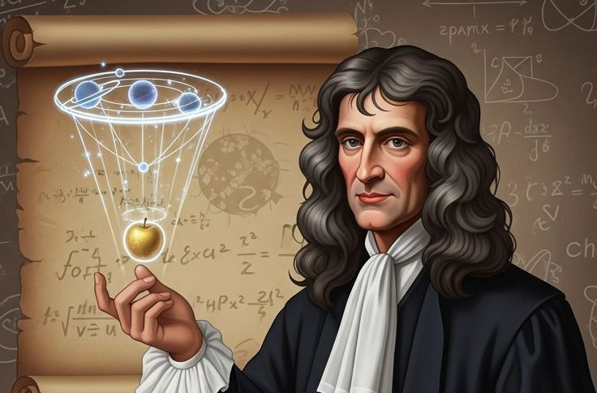

The Chronology of Sir Isaac Newton

1643: Birth at Woolsthorpe
Born prematurely on Christmas Day. He was left in the care of his grandmother and showed **early signs of mechanical ingenuity** by building models and devices.

1665-1666: The Annus Mirabilis ("Year of Wonders")
During the Plague closure of Cambridge, Newton returned home to Woolsthorpe and made simultaneous breakthroughs in **Calculus**, **Optics**, and **Gravity**.

1687: Publishes Principia Mathematica
The publication of his masterwork, detailing the **Three Laws of Motion** and the **Law of Universal Gravitation**, financed by his friend Edmond Halley.